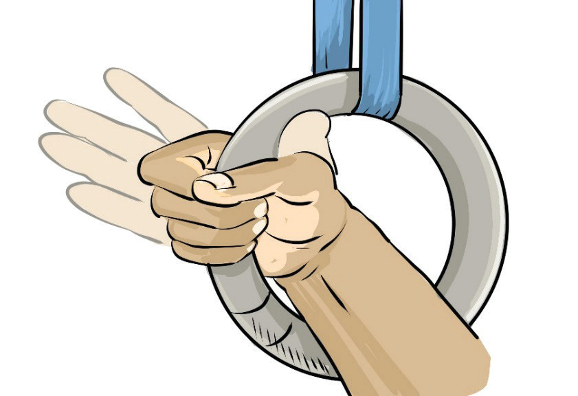
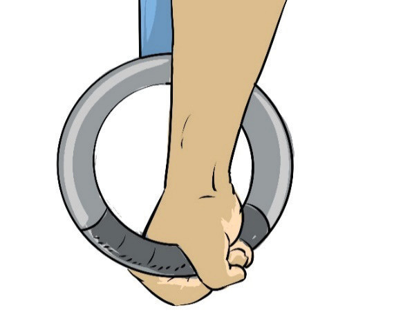

Above the ring grip
In gymnastics, the above-the-ring grip refers to a hand position where the gymnast supports bodyweight above the rings, rather than hanging below them. This grip is commonly used in support positions and advanced strength skills on the still rings. The following steps will help you practice the above ring grip on a ring:
- (i)Grip the rings with the palms facing downward, Figure 4.17;
- (ii)Keep the wrists and forearms above the rings, providing stability; and
- (iii)Engaged shoulders, wrists, and core to maintain control.
